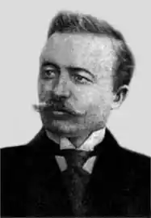
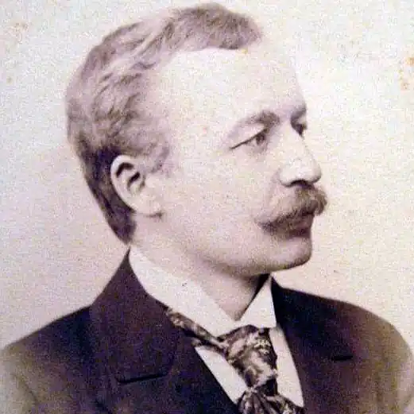

Тиждень 21 серпня — 27 серпня 1998 р., №34
Осип Маковей — галицький Орфей
23 серпня 1867 року в Яворові на Львівщині народився Осип Маковей — поет, прозаїк, сатирик, публіцист, науковець, педагог, громадський діяч. Iз творами Маковея його земляки зазвичай знайомилися ще до того, як вміли читати. Наприклад, одним і найдавніших моїх спогадів є пісня, яку співали у свята мій дідусь, його сини, зяті й онуки: Ми, гайдамаки, вічно однакі — все проклинаєм ляцькеє ярмо; йшли діди на муки, йдем і ми, правнуки. Ми за народ життя своє дамо! Доки сусіди нам людоїди ми, гайдамаки, як були, так є; вже часи минули, як ми шиї гнули, і кожен з нас за всіх життя дає! Не тішся, враже, сорок поляже — тисяч натомість стане до борби — і ножі свячені на серця скажені наточать знов потоптані раби. Наша присяга: правда, відвага, пімста за кривди люта і грізна, що за народ нам і смерть не страшна! А однією з перших прочитаною моїм поколінням книг була повністю розкуплена в хрущовські часи, але (й тому) ні разу не перевидана в брежнєвські повість Маковея "Ярошенко". Зрозуміло, що розповідь про перемогу козаків на чолі із Сагайдачним під Хотином у 1641 році ми читали з більшою цікавістю, ніж про Павлика Морозова, який "заклав" своїх батьків, або про Зою Космодем'янську, яка спалювала хати селян, у яких квартирували німці. Як тут не згадати запевнень творця новітньої Німеччини Бісмарка про те, що війну Пруссії з Австрією за Сілезію виграли не стільки його генерали, скільки шкільні вчителі, які виховували в майбутніх солдатах насамперед патріотизм і дисципліну. Озброєну французами до зубів 80-тисячну польську армію Галлера стрільці Української Галицької Армії гнали 1919 року майже без набоїв від Збруча до Львова також тому, що їх вчили такі шкільні вчителі, як Богдан Лепкий та Осип Маковей. Обидва вони ще й писали твори, якими переконували земляків не почувати себе одвічними невдахами, а згадати часи, коли предки рішучіше давали собі раду із своїми кривдниками. Мрію здобути кращу долю "хоч синам, як не собі" Маковей успадкував від батька — яворівського міщанина, який хоч і тяжко заробляв рільництвом та кушнірством, але послав сина до української гімназії у Львові й на філософський (тобто філологічний) факультет Львівського університету. Щоб не сидіти у батька на шиї, Маковей підробляв репетиторством, перекладами урядових документів у магістраті й журналістськими публікаціями. Літературні й організаторські здібності він виявив ще в гімназії — друкувався в гектографованих газетах, які видавали самі учні, а коли ці неформальні видання заборонили, створив таємний гурток "Згода". 1887-го був одним з організаторів журналу "Товариш" (разом з I.Франком, у справі якого Маковея також допитували жандарми 1889 р.). Після університету працював у газетах "Діло", "Народна часопись", "Буковина" (редактором), журналах ""Зоря", "Літературно-науковий вісник", одним із організаторів якого також був він. За свою антиурядову спрямованість ці видання часто конфісковувала й закривала поліція, тому Маковей здобув собі ще й фахи педагога та науковця-філолога. Закінчивши 1899 року семінар Віденського університету, викладав у Чернівецькій учительській семінарії, а за дослідження життя й творчості П.Куліша отримав ступінь доктора філософії. 1914 року його як офіцера запасу врятував від передової лише статечний вік, тому він працював військовим перекладачем, начальником чернівецької поштової цензури та в радіогрупі. А після війни — директором Заліщицької гімназії. Та не полишав і широкої літературної, наукової й громадської діяльності. Зокрема, таврував у сатиричних творах живучих, до речі, й нині "каведеків", тобто хамелеонів, які діють за принципом "куди вітер дме" (новела "КВД"). За безкомпромісний патріотизм під час українсько-польської війни й після неї потрапив 1921 року до Чортківської в'язниці, яка підірвала його здоров'я. Помер 21 серпня 1925 року — за два дні до свого 58-ліття. Виховані на його статтях, творах і лекціях земляки, яких він вчив ні за яких обставин не складати зброї, співали на його похороні: "Не тішся, враже, сорок поляже — тисяч натомість стане до борби". Iгор ГОЛОД